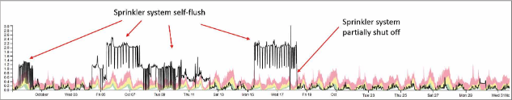
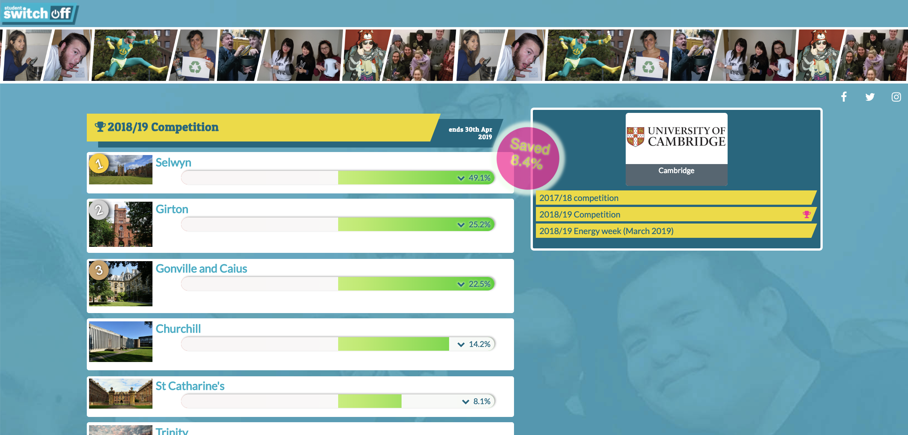
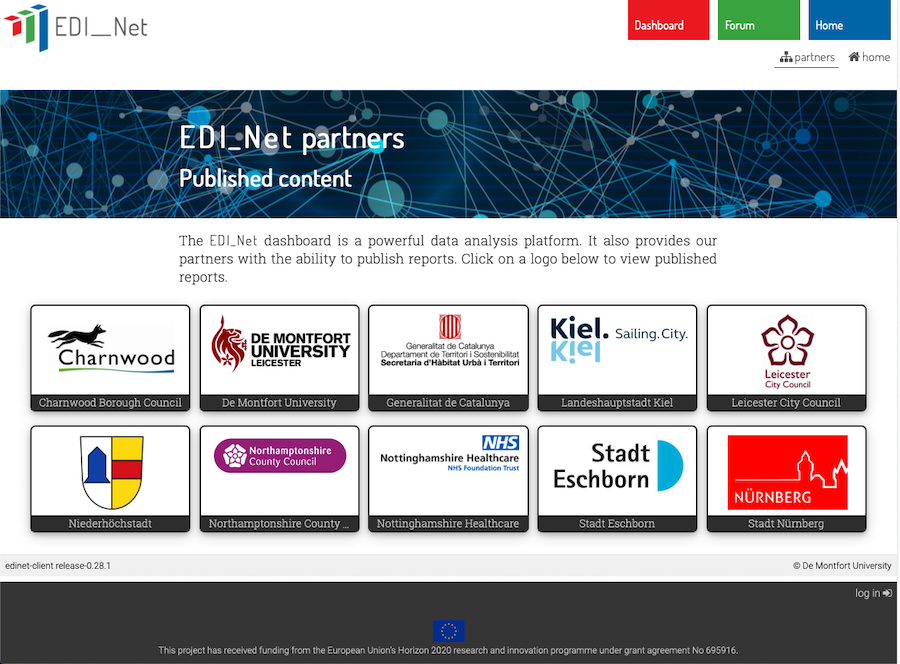
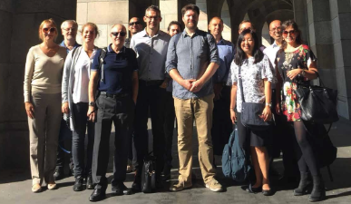

ECOVISUM

Tools to minimise the costs of energy and water usage
- reduce your environmental impact
- decrease your financial costs
- become accountable and transparent
Making sense of energy data
Our data analysis service processes your data to output just the technical information you need, summarised in various forms:
- at-a-glance hourly monitoring
- in-depth graphs to identify anomalies
- visual reports to share with stakeholders
More information:
The problem

Energy and its management is famously invisible to end users REF_LINK
Energy efficiency is theoretically easy, but in practice it’s a huge challenge to monitor and optimise energy performance across large numbers of buildings in one location.
Effective energy monitoring
A large building portfolio sees regular usage changes, and energy systems need ongoing maintenance and adaptation to keep them operating efficiently. Vigilance is required to:
- maintain the energy infrastructure
- plan suitable investments and interventions
- respond effectively to faults as they arise
- keep building users up-to-date
Organisations have increasing access to good quality energy and water usage data from their buildings, so it is now becoming easier to:
- monitor buildings continually
- identify energy usage issues
- prepare suitable interventions
However, the volume of data generated can be overwhelming and data management systems are often costly and overly complex, being designed primarily for technical users.
See our solution
Our solution

If building users change their behaviour, they need a visible indicator of their impact on energy costs to maintain motivation
We think energy management should be a distributed task with energy managers situated within a network of stakeholders.
We aim to allow information extracted from energy data to penetrate as deeply into that network as possible.
This means the communication of data in usable forms, enabling stakeholders to take advantage of the data in creative ways.
A new approach to energy management
Our dashboard provides a user-friendly ‘single source of truth’ that builds on your organisation’s raw data. This facilitates dialogue between:
- the overview of expert energy managers
- building users with valuable local knowledge
With the growing availability of excellent data, we have been able to redesign energy management information systems from the ground up, to meet these new demands:
- highlighting critical information for energy management
- presenting continual updates from automatically-extracted data
- on-demand energy management information in a usable form
Very simply, we enable the right information to be available to the right people at the right time.
The rest is up to you.
Case studies
Our system has been in use while evolving since 2007. Here are details from some of our users
The NUS Energy Dashboard

"NUS SSO quote about dashboard here"—Quote credit
The National Union of Students offer our ‘Energy Dashboard’ to enhance engagement in the energy-saving campaign ‘Student Switch-Off’ (SSO). EcoVisum offers universities and student residence providers across the UK and EU intra-hall energy-saving competitions calculated from live energy data. These are displayed as ‘leaderboards’ with the highest savers at the top.
From a single online software service, the dashboard is available from mobile, through laptop and desktop computers, to large display screens and ‘widgets’ that can be added to websites, etc.
Overall, there was a significant increase in student engagement in the SSO campaign with organisations using EcoVsum’s ‘Energy Dashboard’. There are also universities outside the SSO campaign who us the software to encourage student awareness of energy usage.
Stadt Nürnberg and EDI-Net

"The smiley faces dashboard is helping us to further develop the [municipal energy management] policy. Because many technical measures have already been implemented, the user is now crucial to the future. The smiley faces are one very good measure to engage with users and inform building users about energy." —Eva Anlauft, Head of Municipal Energy Management, City of Nuremberg
Under EDI-Net, Nürnberg maintains 34 buildings across four locations, with data displayed at increasing levels of detail on demand, from ‘smiley faces’ to detailed graphs.
By using our software, Nürnberg has been able to quantify the resulting savings, with a marked difference of XX%, equating to XXXtonnes of CO2 ???
Together with nine other organisations, including the Nottingham NHS, the city is committed to ongoing use of EDI-Net to maintain both awareness of and ease of use in monitoring energy use across a complex array of building and users under their management.
Our partners
Energy data for everyone
Detailed energy management for experts

Ecovisum’s systems offer easy at-a-glance monitoring of energy usage (electricity, gas, water) with increasing detail as required, at a click
In one online location you have:
- simple summary reports
- if nothing changed, you don't need to know
- only focus on the interesting data
- drill down to see the detail
- no-fuss interface
- easily sharable
At-a-glance energy information for non-technical stakeholders

Ecovisum’s energy dashboards can be used for communication… to everyone
- Publishable regularly-updated league tables
- User-friendly ‘smiley face’ analytics
- Enable buildings to self-monitor
- Display your data to a wider audience
- Keep users engaged
- Enable energy-saving competitions
- Encourage continuous improvement
Pricing plans
Student Switch Off dashboard

We built, have successfully maintained and upgraded the energy dashboard for the NUS Student Switch Off campaign since March 2014. See the case study
Your data can be either manually uploaded, or taken directly from your energy data files which can be automatically imported, pushed to our server for processing, or manually uploaded (as Excel or CSV files).
Costs:
- £1200 20 halls @ 5 meters per hall (up to 100 meters)
- £20 for each additional hall (with up to 5 meters)
- £10 for each additional meters
Once set up, competitions can be created between student residencies.
EDI-Net energy monitoring

EDI-Net has been running successfully since 2018, with some authorities saving up to ???% on energy usage.
Organisations with regular and reliable energy data signed up to the system can offer building users and energy managers instant knowledge of live energy usage at a level suited to the user, from simple ‘smiley faces’ to detailed graphs to be monitored in detail. See the EDI-Net case study.
Costs:
- £??? details
- £??? details
- £??? details
How we work

since 2007 we have researched developed the ideas that underpin our energy data monitoring service.
The perfect system is effective, fast and cheap. However, in reality two of the three key areas will receive more focus than the other:
- quality
- affordability
- speed
Our system is very affordable and of high quality, because we slow down the development process so that quality and affordability have the highest priority. Our methods are to:
- evolve software continuously, but gradually and carefully
- recognise that energy management sits within complex systems
- make room for effective ideas by shedding ineffective ones
- engage users in development by making feedback a priority
We are open to systematic experimentation, while guarding against complication.
This is how we achieve and deliver high quality at a low cost.
See more:
Research projects
Ecovisum directors have produced significant previous and current projects on energy use and awareness, with numerous international world leading research papers on the impact and relevance of our work to organisations, academics and policy makers.